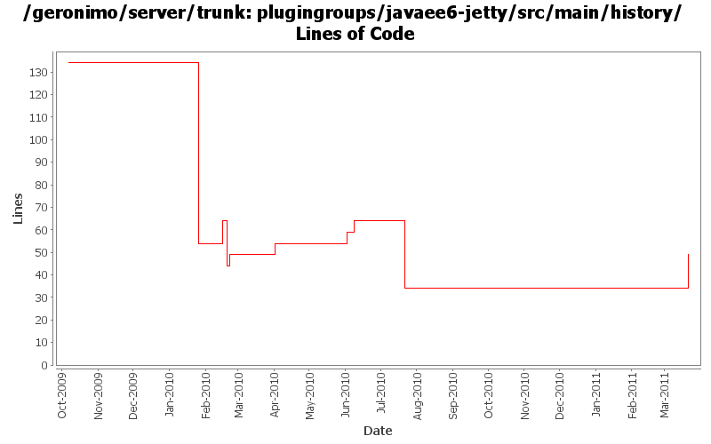

[root]/plugingroups/javaee6-jetty/src/main/history

| Author | Changes | Lines of Code | Lines per Change |
|---|---|---|---|
| Totals | 15 (100.0%) | 76 (100.0%) | 5.0 |
| dwoods | 9 (60.0%) | 34 (44.7%) | 3.7 |
| djencks | 4 (26.7%) | 26 (34.2%) | 6.5 |
| genspring | 1 (6.7%) | 15 (19.7%) | 15.0 |
| gawor | 1 (6.7%) | 1 (1.3%) | 1.0 |
activate mejb and prorun in plugins build.
15 lines of code changed in 1 file:
enable (non-working) openwebbeans plugin in build just to test dependencies, etc.
1 lines of code changed in 1 file:
add in default welcome app
5 lines of code changed in 1 file:
GERONIMO-5221 include the bval support in the jetty server.
5 lines of code changed in 1 file:
GERONIMO=5210 enable openejb in build, it is pretty much working
5 lines of code changed in 1 file:
move activemq modules to a new jms plugin group and update persistence plugin to require framework for minimal servers
5 lines of code changed in 1 file:
GERONIMO-4931 add amq to assemblies, fix build slightly
16 lines of code changed in 1 file:
move console plugins to new console plugin groups
5 lines of code changed in 1 file:
move jpa from javaee6 plugins down to eba plugins
0 lines of code changed in 1 file:
minimal grouping is now wab and eba builds upon that
1 lines of code changed in 1 file:
add RFC66 WAB plugingroups based on test servers under plugins/wab. Also rename tomcat plugin from javaee5 to javaee6.
8 lines of code changed in 1 file:
add welcome app, console and plugin portlet back into the javaee assemblies; also update the plugin-repos to 3.0
10 lines of code changed in 1 file:
build plugin groups, but trim them to what is available
0 lines of code changed in 1 file:
rename jetty plugingroups and assemblies to reflect jetty8 and javaee6
0 lines of code changed in 2 files: